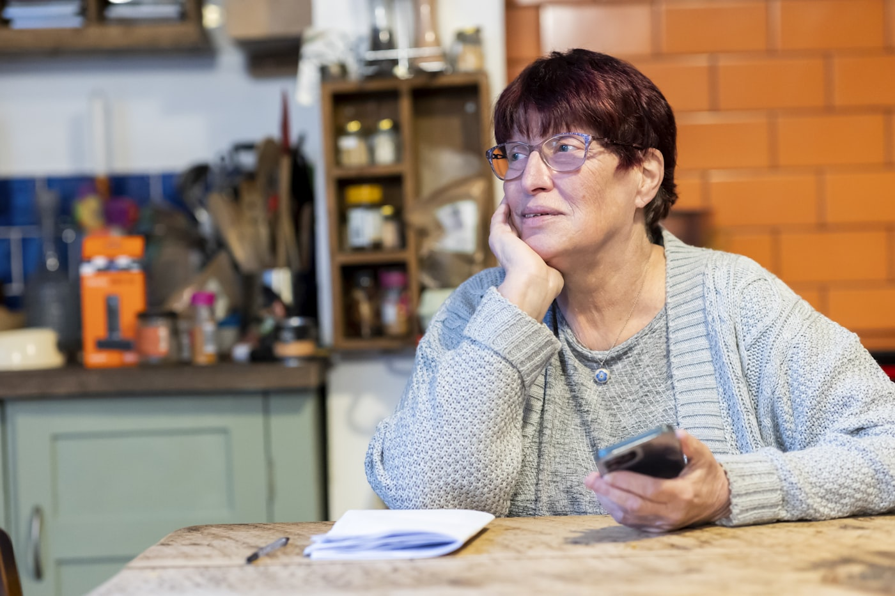
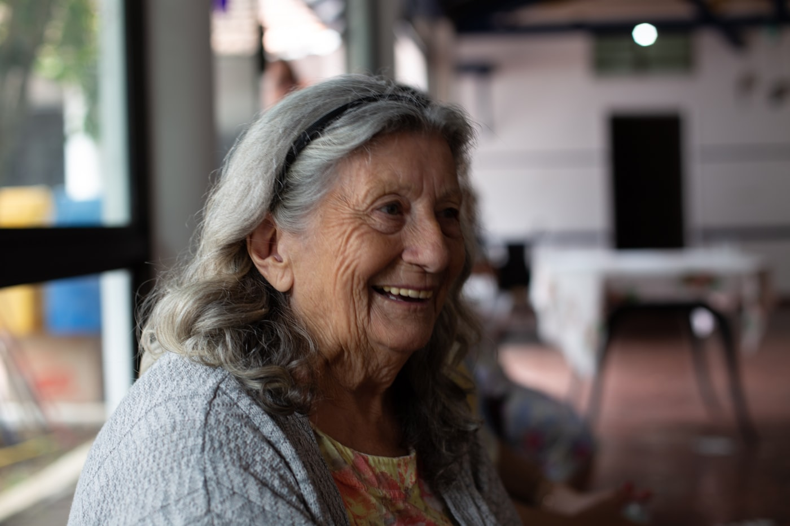
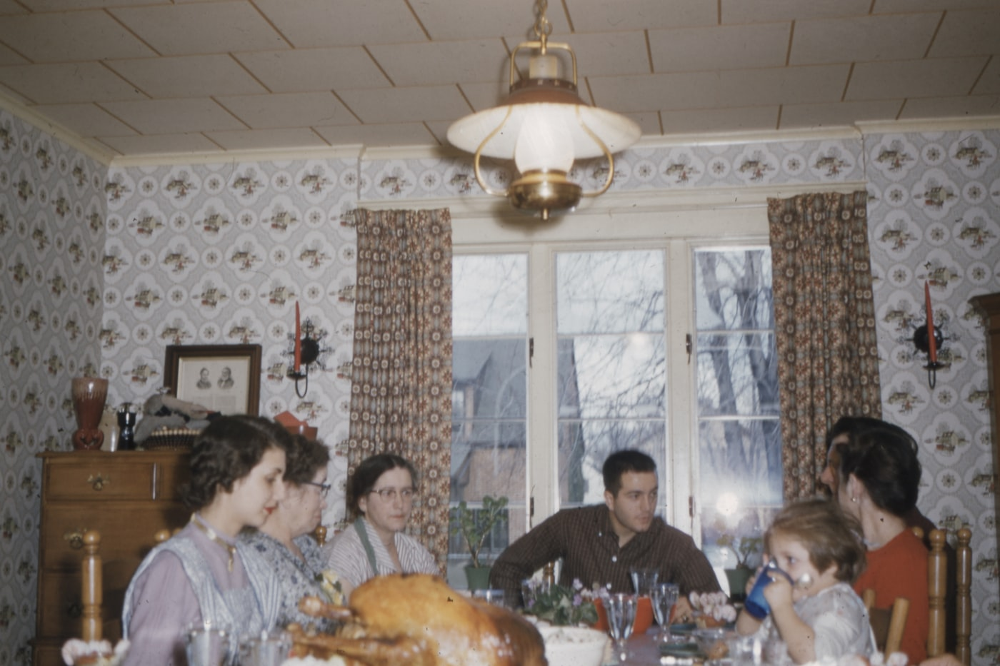
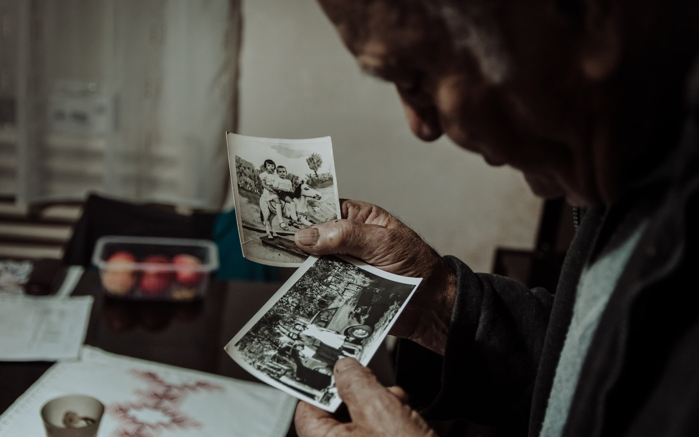

1
Une question arrive
Par SMS ou par courriel, chaque semaine, à l'heure qui lui convient. Vous pouvez choisir les questions, ou nous laisser faire.
Chaque semaine, une question. Elle répond en parlant, depuis son téléphone. À la fin de l'année, un livre imprimé de ses histoires — et sa voix à chaque page.
Un seul paiement, pas d'abonnement. Ses souvenirs restent privés.

Quelle odeur vous ramène à votre enfance ?
Rien à installer, rien à écrire. Une année de questions, à son rythme, et un livre au bout.
Par SMS ou par courriel, chaque semaine, à l'heure qui lui convient. Vous pouvez choisir les questions, ou nous laisser faire.

Elle ouvre le lien, elle raconte. Deux minutes ou vingt. Si le téléphone sonne au milieu, rien n'est perdu.
Les hésitations s'effacent, ses tournures restent. Le mot à mot est conservé à côté — on ne remplace jamais ce qu'elle a dit.

Chaque histoire qu'elle choisit de partager arrive à ses proches. Ils l'écoutent, ils lui répondent d'un mot. Elle le reçoit.
Trois règles que rien ne fait plier, parce qu'un livre de famille ne vaut que par la confiance qu'on lui accorde.
Le texte mis au propre garde ses mots, son ordre, sa façon de dire. Une date impossible reste une date impossible : on ne corrige pas les souvenirs.
Partager, garder pour elle, ou décider plus tard. Rien n'est présélectionné, rien ne presse. Et elle peut retirer une histoire à tout moment.
Les enregistrements et les textes restent la propriété de la famille. Vous pouvez tout télécharger, et tout effacer.

Au bout de l'année, ses histoires sont relues par la famille, mises en page et imprimées. Chaque chapitre porte un petit code : on le scanne, et on l'entend.
Pas d'abonnement à surveiller, pas de renouvellement discret. Vous offrez l'année, elle raconte à son rythme, et le livre arrive.
Paiement sécurisé · Vous pouvez changer d'avis pendant 14 jours